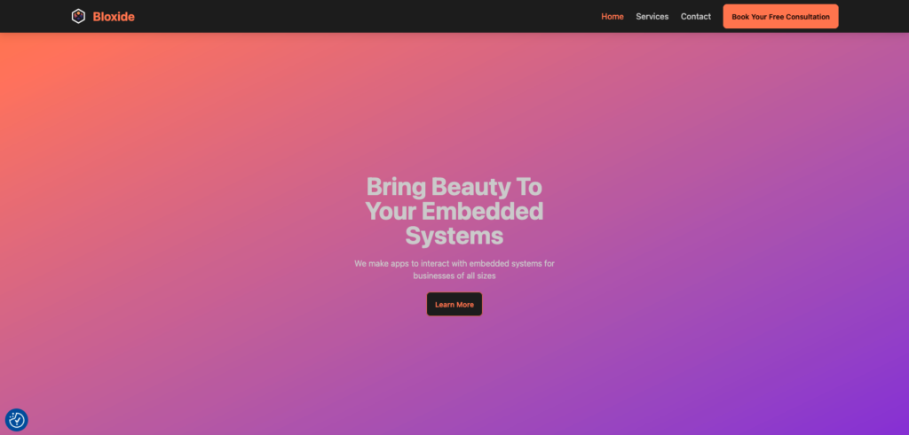
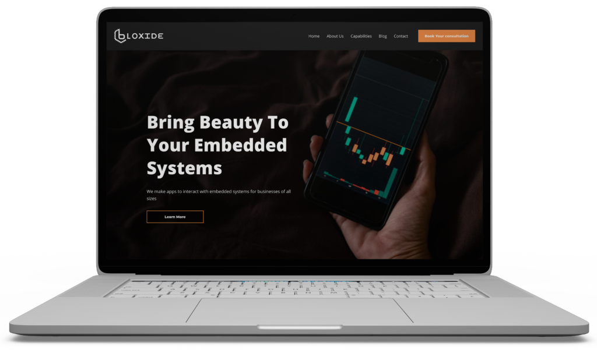

The original site made key information harder to find because navigation, CTAs, typography, and forms lacked hierarchy.
Case study
BLOXIDE
A UX/UI redesign for Bloxide.com, a technology company specializing in embedded systems software solutions, focused on usability, hierarchy, engagement, and conversion clarity.
I audited the site, studied competitors, created wireframes, redesigned screens, and tested usability improvements.
The redesign brought CTAs above the fold, simplified wayfinding, and improved readability across content-heavy pages.
The final direction made the technology-company experience easier to scan, trust, and use for potential clients.

My contribution
- Owned the UX/UI redesign across research, wireframing, prototyping, visual design, and usability testing.
- Audited the original website to identify navigation, CTA, typography, form, and blog-structure issues.
- Used competitor analysis and usability findings to prioritize changes that improved clarity, trust, and conversion readiness.
Challenge
The original website had usability, hierarchy, and engagement problems. Users struggled to find key information because the navigation lacked clarity, CTAs were not prominent enough, typography was difficult to scan, and forms felt cluttered with weak validation.
The blog structure also used repetitive placeholder content, which reduced credibility and engagement.
Research & testing
- Analyzed technology and software development websites to identify best practices for UX, CTA placement, whitespace, hierarchy, and content structure.
- Conducted usability testing on the original site to uncover pain points.
- Identified unclear forms, weak CTA contrast, dense typography, and navigation paths that required too many clicks.
Process evidence


Design decisions
Streamlined the menu, added breadcrumb navigation, and created a sticky navbar for faster access to key sections.
Moved important CTAs above the fold, increased button size and contrast, and added hover interactions.
Increased heading sizes, improved line-height and font weight, and used consistent typography across sections.
Selected final screens
Outcome
The redesign produced a clearer information architecture, more intuitive forms, improved readability, stronger CTA placement, and a more structured blog section.
The result makes the Bloxide website easier to scan, more credible for potential clients, and better aligned with conversion goals.
- Made key information easier to find by simplifying navigation and adding wayfinding support.
- Improved conversion clarity by increasing CTA visibility, contrast, and above-the-fold placement.
- Reduced user friction by clarifying forms and improving typography for faster scanning.